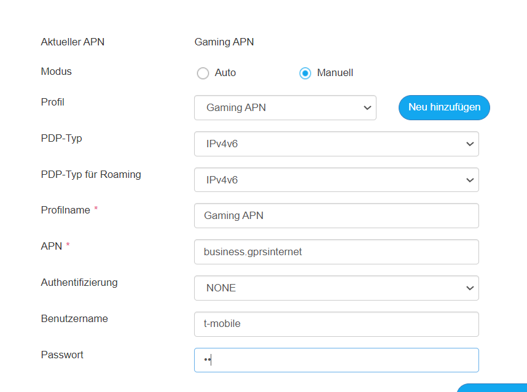

Anbei findet man alle Infos wie man aktuell als Konsolenspieler das meiste aus seinem 5g-Rouer rausholt.
1.NAT-Typ
Dazu findet man einiges auch schon in den Foren. Zum einen ist es wichtig erstmal den
APN des Routers
richtig zu setzten:

Kennwort hierfür ist : tm
Zweiter Schritt:
Die einzelne Portfreigabe einer Konsole ist mühsam, sowie auch in der Anzahl bei manchen Router beschränkt. Besser geeignet ist hier die IP-Adresse der Konsole bei den Erweiterten Einstellungen --> Firewall --> DMZ einzutragen und das
DMZ Setting
zu aktivieren.
Da ich persönlich mit dem Ping der NSA 5g Version noch etwas unzufrieden bin ( rund 70-80 bei mir obwohl ich direkt neben dem Sender wohne) hab ich hier folgenden Verbesserungsansatz:
2.Ping:
Einstellen der MTU-Settings (Erweiterte Einstellungen-->Router Einstellungen) :
Hierfür zuerst mittels PC wie in :
https://kb.netgear.com/de/31507/Festlegen-der-optimalen-MTU-Größe-für-Ihren-Router-mithilfe-eines-Ping-Tests-1479991120725?language=de
angeführt den optimalen MTU Wert bestimmen. Den MSS Wert 40 unter den MTU festlegen.
Schlussendlich noch die richtigen
Konsolensettings:
Bei zB der PS4 so wie es aus etlichen YouTube-Videos bekannt ist, den richtigen DNS-Server (ich empfehle Google mit 8.8.8.8 8.8.4.4) bei der Netzwerkverbindung manuell einstellen. Hierbei ebenfalls den MTU Wert auf den selben wie im Router festlegen.
Diese Settings haben bei mir eine Ping-Verbesserung von 70-80 auf 50-60 (Ingame als auch bei Ping-Test zu gleichen Servern) gebracht. Zwar immer noch nicht perfekt aber eine spürbare Verbesserung für alle Shooter-Fans.
Bearbeitet von Patrick Hutter
Am 07/05/2022 um 13:35 schrieb Patrick Hutter:Anbei findet man alle Infos wie man aktuell als Konsolenspieler das meiste aus seinem 5g-Rouer rausholt.
1.NAT-TypDazu findet man einiges auch schon in den Foren. Zum einen ist es wichtig erstmal den APN des Routers richtig zu setzten:
Kennwort hierfür ist : tm
Zweiter Schritt: Die einzelne Portfreigabe einer Konsole ist mühsam, sowie auch in der Anzahl bei manchen Router beschränkt. Besser geeignet ist hier die IP-Adresse der Konsole bei den Erweiterten Einstellungen --> Firewall --> DMZ einzutragen und das DMZ Setting zu aktivieren.
Da ich persönlich mit dem Ping der NSA 5g Version noch etwas unzufrieden bin ( rund 70-80 bei mir obwohl ich direkt neben dem Sender wohne) hab ich hier folgenden Verbesserungsansatz:
2.Ping:
Einstellen der MTU-Settings (Erweiterte Einstellungen-->Router Einstellungen) :
Hierfür zuerst mittels PC wie in : https://kb.netgear.com/de/31507/Festlegen-der-optimalen-MTU-Größe-für-Ihren-Router-mithilfe-eines-Ping-Tests-1479991120725?language=de angeführt den optimalen MTU Wert bestimmen. Den MSS Wert 40 unter den MTU festlegen.
Schlussendlich noch die richtigen Konsolensettings:
Bei zB der PS4 so wie es aus etlichen YouTube-Videos bekannt ist, den richtigen DNS-Server (ich empfehle Google mit 8.8.8.8 8.8.4.4) bei der Netzwerkverbindung manuell einstellen. Hierbei ebenfalls den MTU Wert auf den selben wie im Router festlegen.
Diese Settings haben bei mir eine Ping-Verbesserung von 70-80 auf 50-60 (Ingame als auch bei Ping-Test zu gleichen Servern) gebracht. Zwar immer noch nicht perfekt aber eine spürbare Verbesserung für alle Shooter-Fans.
Weiters eine Hardware-Empfehlung:
Solltest du einen aktuelle ZTE 5G Router von Magenta bekommen haben, versuche doch, die Verbindung mit einer externen Antenne zu verbessern. Ein Ping von 15-20ms sollte somit in den meisten Fällen kein Problem sein! (vorallem bei 5G)
Mit noch einer Antenne klappt es perfekt. So ist es zumindest bei mir
Am 27.5.2022 um 01:15 schrieb HilfsbereiterKerl:Weiters eine Hardware-Empfehlung:
Solltest du einen aktuelle ZTE 5G Router von Magenta bekommen haben, versuche doch, die Verbindung mit einer externen Antenne zu verbessern. Ein Ping von 15-20ms sollte somit in den meisten Fällen kein Problem sein! (vorallem bei 5G)
Der 5g Mast is auf gleicher Höhe auf 10m Luftlinie von meinem Router entfernt. Eine externe Antenne fänd ich hier etwas overkill. Eigentlich sollte mein Ping aich ohne gut sein... eigenartigerweise jedoch nicht.
Hallo, muss man dann eigentlich den MTU Wert an der Playstation auch anpassen? Nach meinen Tests am Laptop ist mein optimaler MTU 1400. Hab das mal an der Konsole auch geändert. Leider wurde mir dann angezeigt das mein Router anscheinend keine IP Fragmentierung untersützt.
{kind=link}
{kind=link}
{kind=link}